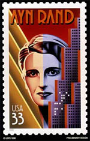

Monday, October the 4th, 2004
back to: title, date or indexes
It is always a pleasure to turn readers' attention to preposterous authors. Our antipodean correspondent Glyn Webster sent in this charming note about Ayn Rand, the Jeanette Winterson of her day:

“I must show you this postage stamp (above). The Art Deco style makes Ayn Rand look like Robot Maria from Metropolis enlarged to a godlike size, but that's not what caught my attention. Look at the lit windows on the buildings in the foreground—they look like a pattern of holes on a Hollerith punch card and I'm sure that is what they represent. I've been trying to decode the message in the lights from various orientations, offsets and encoding tables but without success. Maybe another of your readers would like to take up the puzzle? ”*
Whether or not any readers wish to take up Mr Webster's challenge, I recommend a visit to Ayn Rand The Stamp Collector, a rather unnerving website which tells us that the author of Atlas Shrugged once wrote a piece entitled Why I Like Stamp Collecting. I am not entirely sure why that makes me laugh like an idiot, but it does.
* NOTE : Glyn Webster adds: “I'm quite sincere about the puzzle. I know that an illustrator for a British political magazine or newspaper once did the same thing with rows of Braille dots in many of his illustrations. Sadly, his messages were all obscene insults aimed at the people he was drawing, he had no wit. I read a newspaper article about this on the internet a while ago, but now I just can't find it.” If anyone knows to whom Glyn refers, please let me know.